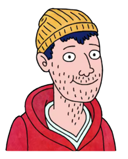
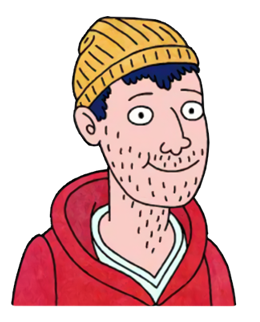
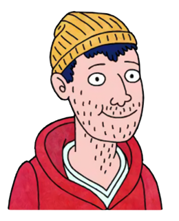

One of the most underrated TV shows on Netflix is BoJack Horseman. A common deterrent for people is the fact that it's an adult cartoon. But, just as "Bob's Burgers" has shown, not all adult cartoons are cringey, racist, or otherwise problematic (but I digress...) The show features a washed up TV actor, BoJack, who struggles to find and mantain happiness due to his cynical worldview. Other characters include his assertive agent, Princess Carolyn, his nerdy ghostwriter Diane, his enthusiastic fellow actor, Mr. Peanutbutter, and his stoner roommate, Todd. What makes this show interesting is how these different characters interact. One would expect these distinct personalities to be completely incompatible, but the show's witty script creates a natural flow.
There are countless iconic characters in BoJack Horseman (Sextina Aquafina, A Ryan Seacrest Type, Officer Meow Meow Fuzzyface, Vincent Adultman, Character Actress Margo Martindale... need I go on?) However, we need to be realistic about data collection so that we can analyze characters who actually have character arcs. So, the five characters we will be examining are BoJack, Princess Carolyn, Diane, Mr. Peanutbutter, and Todd. Click on one of them to get started!
